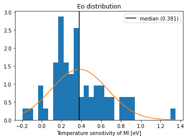
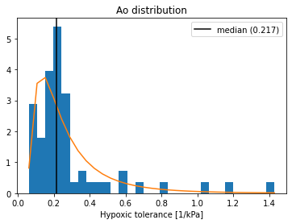
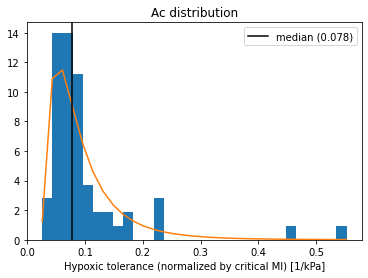
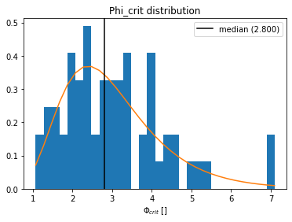
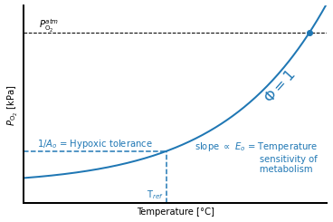
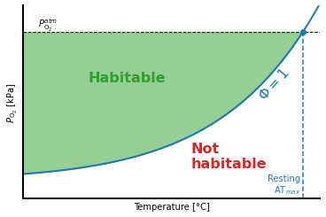
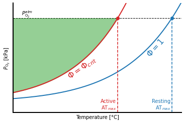
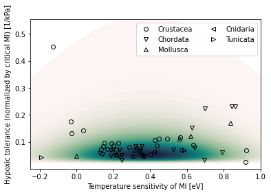

Metabolic Index trait space
Contents
Metabolic Index trait space¶
%load_ext autoreload
%autoreload 2
from scipy import stats as scistats
import numpy as np
import xarray as xr
import matplotlib.pyplot as plt
import constants
import metabolic as mi
import util
Load traits database¶
df = mi.open_traits_df()
df
| Species | Phylum | alphaD_log10 | Emet | Eo | Ao | Ac | Phi_crit | |
|---|---|---|---|---|---|---|---|---|
| 0 | Acanthephyra acutifrons | Crustacea | 0.479565 | 0.040200 | -0.027836 | 0.264715 | 0.131959 | 2.006040 |
| 1 | Acanthephyra curtirostris | Crustacea | 0.377714 | 0.043938 | 0.038027 | 0.252578 | 0.141861 | 1.780456 |
| 2 | Acanthephyra purpurea | Crustacea | 1.035748 | 0.840722 | 0.131972 | 0.230068 | 0.073638 | 3.124330 |
| 3 | Acanthephyra smithi | Crustacea | 1.082577 | 0.313173 | -0.030067 | 0.286307 | 0.174423 | 1.641453 |
| 4 | Acipenser brevirostrum | Chordata | NaN | NaN | 0.362569 | 0.218524 | 0.048415 | 4.513525 |
| ... | ... | ... | ... | ... | ... | ... | ... | ... |
| 56 | Styela plicata | Tunicata | 0.433791 | 0.346635 | -0.190998 | 0.061336 | 0.043505 | 1.409863 |
| 57 | Systellaspis debilis | Crustacea | 0.779626 | 0.418652 | 0.226970 | 0.219289 | 0.096003 | 2.284196 |
| 58 | Tarletonbeania crenularis | Chordata | NaN | NaN | 0.213307 | 0.203696 | 0.051780 | 3.933876 |
| 59 | Tautogolabrus adspersus | Chordata | 0.801974 | 0.327012 | 0.244520 | 0.170886 | 0.051204 | 3.337395 |
| 60 | Zoarces viviparus | Chordata | NaN | NaN | 0.789434 | 0.177870 | 0.062111 | 2.863717 |
61 rows × 8 columns
Trait distributions¶
Fit normal distribution to \(E_o\) and lognormal distribution to \(A_o\) (\(A_c\)).
def plot_trait_hist(trait):
fig, ax = plt.subplots()
pdf = mi.trait_pdf(df, trait)
beta = pdf.beta
trait_median = pdf.median()
trait_values = df[trait].values
if pdf.dist_type == 'lognormal':
log10_values = np.log10(trait_values)
n, bins, h = ax.hist(trait_values, np.logspace(log10_values.min(), log10_values.max(), 30),
density=True);
else:
n, bins, h = ax.hist(trait_values, 30, density=True);
pdf_fitted = pdf.fitted(bins)
ax.plot(bins, pdf_fitted)
ax.set_title(f'{trait} distribution')
ax.set_xlabel(util.attrs_label(df[trait].attrs));
ax.axvline(trait_median, color='black', label=f'median ({trait_median:0.3f})')
ax.legend();
return trait_median, beta
Eo_med, Eo_beta = plot_trait_hist('Eo')
Ao_med, Ao_beta = plot_trait_hist('Ao')
Ac_med, Ac_beta = plot_trait_hist('Ac')
Phi_crit_med, Phi_crit_beta = plot_trait_hist('Phi_crit')




PO2_atm = constants.XiO2 * constants.kPa_per_atm
T = np.arange(0, 32, 0.1)
def make_figure(which):
fig, ax = plt.subplots()
pO2_at_Phi_crit = mi.pO2_at_Phi_one(T, Ac_med, Eo_med*2)
pO2_at_Phi_one = mi.pO2_at_Phi_one(T, Ao_med, Eo_med*2)
ATmax_crit = mi.compute_ATmax(PO2_atm, Ac_med, Eo_med*2)
ATmax_one = mi.compute_ATmax(PO2_atm, Ao_med, Eo_med*2)
color_rest = 'tab:blue'
color_active = 'tab:red'
# active
if 'active' in which:
ax.plot(T, pO2_at_Phi_crit, '-', linewidth=2, color=color_active)
ax.fill_between(
T, pO2_at_Phi_crit, constants.XiO2 * constants.kPa_per_atm,
where=pO2_at_Phi_crit<=PO2_atm,
color='tab:green',
alpha=0.5,
)
ax.plot(ATmax_crit, PO2_atm, 'o', color=color_active,)
ax.text(10, mi.pO2_at_Phi_one(10, Ac_med, Eo_med*2)-1.5, '$\Phi = \Phi_{crit}$',
color=color_active,
fontsize=16,
rotation=35)
# resting
ax.plot(T, pO2_at_Phi_one, '-', linewidth=2, color=color_rest)
ax.plot(ATmax_one, PO2_atm, 'o', color=color_rest,)
ax.text(25, mi.pO2_at_Phi_one(25, Ao_med, Eo_med*2)-1.5, '$\Phi = 1$',
color=color_rest,
fontsize=16,
rotation=48)
if 'resting' in which:
ax.fill_between(
T, pO2_at_Phi_one, constants.XiO2 * constants.kPa_per_atm,
where=pO2_at_Phi_one<=PO2_atm,
color='tab:green',
alpha=0.5,
)
ax.spines['right'].set_visible(False)
ax.spines['top'].set_visible(False)
ax.spines['left'].set_linewidth(2)
ax.spines['bottom'].set_linewidth(2)
ax.set_xticks([]);
ax.set_yticks([]);
ax.set_xlim([T.min(), T.max()])
ax.set_xlabel('Temperature [°C]')
ax.set_ylabel('$P_{\mathrm{O}_2}$ [kPa]')
xlm = ax.get_xlim()
ylm = (-2.6251270379913803, 73.89798889088694) #ax.get_ylim()
ax.set_ylim([ylm[0], PO2_atm + 0.05*np.diff(ylm)])
ax.axhline(PO2_atm, linewidth=1, color='k', linestyle='--', zorder=-100)
ax.text(xlm[0]+0.05*np.diff(xlm), PO2_atm + 0.01*np.diff(ylm), '$P_{\mathrm{O}_2}^{atm}$')
if 'base' in which:
ax.plot([15., 15.], [ylm[0], mi.pO2_at_Phi_one(15, Ao_med, Eo_med*2)], '--', color=color_rest)
ax.plot([xlm[0], 15.], [mi.pO2_at_Phi_one(15, Ao_med, Eo_med*2), mi.pO2_at_Phi_one(15, Ao_med, Eo_med*2)], '--', color=color_rest)
ax.text(15-0.25, ylm[0]+0.01*np.diff(ylm),
'T$_{ref}$',
ha='right',
color=color_rest)
ax.text(15/2, mi.pO2_at_Phi_one(15, Ao_med, Eo_med*2)+0.01*np.diff(ylm),
'$1/A_o$ = Hypoxic tolerance',
ha='center',
color=color_rest)
spc = ' ' * 23
ax.text(18, mi.pO2_at_Phi_one(18, Ao_med, Eo_med*2)-0.06*np.diff(ylm),
f'slope $\propto$ $E_o$ = Temperature\n{spc}sensitivity of\n{spc}metabolism',
ha='left',
color=color_rest)
if 'resting' in which:
ax.text(7, PO2_atm/1.5, 'Habitable', color='tab:green', fontsize=16, fontweight='bold')
ax.text(18, PO2_atm/12, 'Not\nhabitable', color='tab:red', fontsize=16, fontweight='bold')
if 'resting' in which or 'active' in which:
ax.plot([ATmax_one, ATmax_one], [ylm[0], PO2_atm], '--', color=color_rest)
ax.text(ATmax_one-0.25, ylm[0]+0.01*np.diff(ylm),
'Resting\nAT$_{max}$',
ha='right',
color=color_rest)
if 'active' in which:
ax.plot([ATmax_crit, ATmax_crit], [ylm[0], PO2_atm], '--', color=color_active)
ax.text(ATmax_crit-0.25, ylm[0]+0.01*np.diff(ylm),
'Active\nAT$_{max}$',
ha='right',
color=color_active)
plt.savefig(f'figures/misc/phi-explain-{which}.png', dpi=300)
make_figure('base')
make_figure('resting')
make_figure('active')



Phyla = list(df.Phylum.unique())
Phyla
['Crustacea', 'Chordata', 'Mollusca', 'Cnidaria', 'Tunicata']
import cmocean
markerorder = ["o", "v", "^", "<", ">", "s", "p", "P"]
Eo_bins = np.linspace(-1., 2., 30)
Ac_bins = np.logspace(-3, np.log10(df.Ac.max()), 50)
X, Y = np.meshgrid(Eo_bins, Ac_bins)
Z1, Z2 = np.meshgrid(scistats.norm.pdf(Eo_bins, *Eo_beta),
scistats.lognorm.pdf(Ac_bins, *Ac_beta)
)
fig, ax = plt.subplots() #figsize=(6, 6))
mx = np.max(Z1*Z2)
cf = ax.contourf(X, Y, Z1*Z2 / mx,
cmap=cmocean.cm.tempo,
levels=np.arange(0.001, 1.02, 0.01),
)
#plt.colorbar(cf)
for i, phylum in enumerate(Phyla):
ndx = df.Phylum == phylum
ax.plot(df.Eo.loc[ndx], df.Ac.loc[ndx],
linestyle='none',
marker=markerorder[i],
color='k',
markerfacecolor='none',
label=phylum,
)
ax.set_xlabel(util.attrs_label(df.Eo.attrs));
ax.set_ylabel(util.attrs_label(df.Ac.attrs));
ax.set_xlim((-0.25, 1));
#ax.set_ylim((0, 0.4));
ax.legend(ncol=2);
plt.savefig(f'figures/misc/trait-space-idealized.png', dpi=300)
